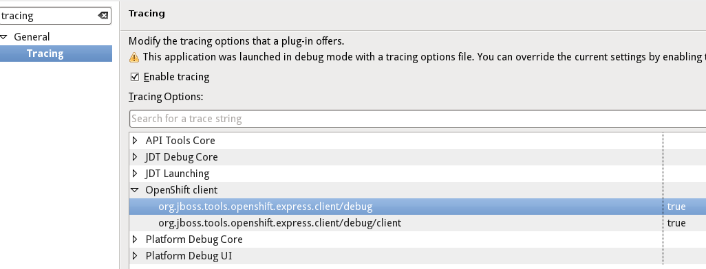
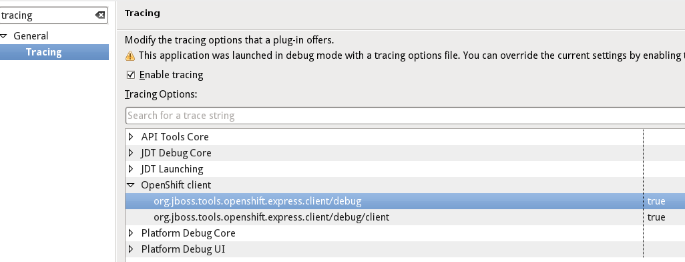

Connection wizard
Embedding wizard
Server adapter

Tracing

The log file that all requests and responses are writte to is by default located at <workspace>/.metadata/trace.log
Connection wizard |
|
| Invalid credentials | Users of the latest rhc tools (1.4.7 and older) can run into the situation where they cannot succesfully authenticate against OpenShift when using JBoss Tools. The tools keep reporting invalid credentials. The rhc command line tools create new configuration files (/etc/openshift/express.conf and ~/.openshift/express.conf) when they're told to do the initial setup. Version 1.4.7 used a new format where values were within double quotes. The Eclipse tooling could not handle these and tried to connect to an invalid host ("openshift.redhat.com"). It then reported invalid credentials since it could not connect to OpenShift. In Alpha1 JBoss Tools can now read these new configuration files. |
Embedding wizard |
|
| MySQL and PostgreSQL | Historically OpenShift did not allow users to users to use a mysql and a Postgres database at the same time. This restriction was lifted some weeks ago and we now upgraded the tooling to allow that, too. |
Server adapter |
|
| No local changes to publish |
To easily publish a project to OpenShift one can use the OpenShift server adapter.
This adapter keeps track of your local changes and tells you if there are any that you can publish to OpenShift.
There are two situations where there are changes that you may publish to OpenShift:
Firstly you may have uncommitted changes. The adapter will then commit and push them to OpenShift.
Secondly you may have committed changes, that you didn't push yet. The adapter will then offer you to push them to OpenShift.
Prior to Alpha1, the adapter wouldn't detect this latter usecase and falsely tell you that there are no changes that you could publish to OpenShift.
|
Tracing |
|
| Trace client communication |
We now added the ability to trace the communication that occurrs with the OpenShift server.
You may enable or disable it via the tracing option in the Eclipse preferences:
 The log file that all requests and responses are writte to is by default located at <workspace>/.metadata/trace.log |